War Thunder
War Thunder — компьютерная многопользовательская онлайн-игра с элементами симулятора, посвящённая боевой авиации, боевым вертолётам, бронетехнике и флоту довоенного периода, а также Второй мировой войны и после военного периода. Проект разрабатывается и издаётся компанией Gaijin Entertainment.
Игровой процесс
War Thunder посвящена боям в воздухе, на суше и на море, при этом наземная, воздушная или морская техника могут сражаться вместе, в одной игровой сессии. В игре воссоздана техника XX и XXI века: военно-морские корабли времен Первой мировой войны, техника межвоенного периода и времен гражданской войны в Испании, Второй Мировой войны, войны во Вьетнаме, Холодной войны, войны в Ираке и современных конфликтов. Игроки могут управлять самолётами, наземной техникой и военными кораблями СССР, Германии, США, Великобритании и Японии, а также стран с меньшими вооруженными силами или менее заметными в конфликтах, таких как Италия, Франция, Китай, Швеция, ЮАР и Израиль. Транспортные средства делятся на три основные категории: авиация, наземный транспорт и флот, а игровые режимы делятся на аркадный, реалистичный и симуляторный. Авиация делится на самолёты и вертолеты, а флот делится между Крупным и малым, где Крупный представляет корабли размером от эсминцев до линкоров и линейных крейсеров, а малый — это небольшие корабли, такие как торпедные катера, моторные канонерские лодки, морские охотники и фрегаты. Также доступен однопользовательский режим, в котором основное внимание уделяется историческим битвам, а также кооперативный режим для сражений с наземной техникой и самолётами.
Легендарная техника

Устройство снарядов
| Бронебойно каморный снаряд |
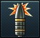
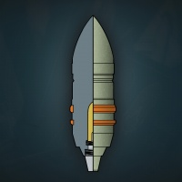 У каморных снарядов внутри есть специальная полость — камора,
в которой находится взрывчатое вещество. Когда такой снаряд пробивает броню, срабатывает взрыватель и снаряд взрывается.
Экипаж вражеского танка поражается не только осколками от брони, но и взрывом и осколками каморного снаряда.
|
|
| Бронебойный сплошной снаряд |
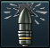
У сплошного снаряда отсутствует камора с взрывчатым веществом, это просто металлическая болванка.
Конечно, урон сплошные снаряды наносят в разы меньший, но зато они пробивают большую толщину брони,
чем аналогичные каморные снаряды, поскольку сплошные снаряды более прочные и тяжёлые. |
|
| Осколочно фугасный снаряд |
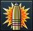
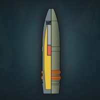 Осколочно-фугасный снаряд представляет собой тонкостенный стальной или чугунный снаряд, заполненный взрывчатым веществом
(обычно тротилом или аммонитом), с головным взрывателем.
При попадании в цель снаряд сразу же взрывается, поражая цель осколками и взрывной волной. По сравнению с бетонобойными и бронебойными каморными снарядами у осколочно-фугасных снарядов очень тонкие стенки,
но зато больше взрывчатого вещества. |
|
| Катушечные подкалиберные снаряды |
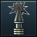
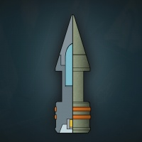 Катушечный подкалиберный снаряд состоит из трёх частей: корпуса, баллистического колпачка и сердечника.
Корпус служит для того, чтобы разогнать снаряд в стволе.
В момент встречи с бронёй баллистический колпачок и корпус сминаются, а сердечник пробивает броню, поражая танк осколками. |
|
| Подкалиберный снаряд с отделяющимся поддоном |
 |
|
|---|---|---|
| Бронебойно фугасный снаряд |
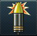
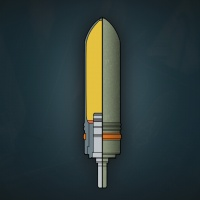 Бронебойно-фугасный снаряд — послевоенный тип противотанкового снаряда,
принцип работы которого основан на подрыве пластичного взрывчатого вещества на поверхности брони,
что вызывает откалывание осколков брони на тыльной стороне и поражение ими боевого отделения машины. |
|
| Кумулятивный невращающийся снаряд |
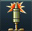
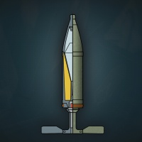 В отличие от ранних кумулятивных снарядов, они стабилизируются в полете не вращением, а с помощью складного оперения.
Отсутствие вращения улучшает формирование кумулятивной струи и существенно увеличивает бронепробиваемость,
при этом снимая все ограничения на скорость полета снаряда, которая может превышать 1000 м/с. |
|
| Противотанковые управляемые ракеты |
 |
|
| Тандемные ПТУР |
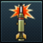
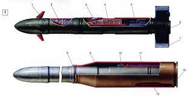Снаряд состоит из двух зарядов, размещённых последовательно.
Заряд, размещённый в головной части называется лидирующим, а в хвостовой — основным.
Фактически, это две расположенные друг за другом обычные кумулятивные боевые части.
Происходит последовательное формирование двух кумулятивных струй, тем самым увеличивается бронепробиваемость |
|
| Подкалиберные оперённые снаряды | 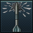
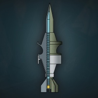Бронебойный оперённый подкалиберный снаряд — наиболее современный вид бронебойных снарядов, предназначенный для поражения тяжело бронированной техники,
защищенной новейшими видами брони и активной защиты.
Эти снаряды являются дальнейшим развитием подкалиберных снарядов с отделяемым поддоном, имеют еще большую длину и меньшее поперечное сечение.
Стабилизация вращением не очень эффективна для снарядов с большим удлинением, поэтому бронебойные оперённые подкалиберные снаряды (сокращённо БОПС) стабилизируются с помощью оперения и,
как правило, используются для стрельбы из гладкоствольных пушек |